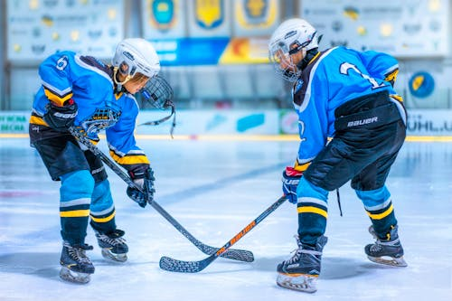

I believe that between the two sports of Hockey and Soccer, I think soccer is superior to hockey for the following reasons:
Hockey stands out as the superior sport because of its unmatched speed, intensity, and skill. Unlike soccer, where the play can often slow down or become predictable, hockey moves at a relentless pace from start to finish. Players must skate at high speeds, handle the puck with precision, and react in split seconds.
This combination of power, coordination, and agility makes hockey both thrilling to play and exhilarating to watch. Every second counts, and one quick pass or breakaway can change the entire game.
In addition to its pace, hockey's physical and mental demands set it apart. Players need strength to battle for pucks along the boards, endurance to play multiple shifts, and courage to block shots traveling over 90 miles per hour.
Yet, despite the physical nature of the sport, hockey also requires a high level of teamwork and strategy. The balance between grit and grace, toughness and talent, gives hockey a unique appeal that soccer simply can't match. It's this blend of raw athleticism and tactical depth that makes hockey not just Canada's game, but the ultimate sport for true competitors.